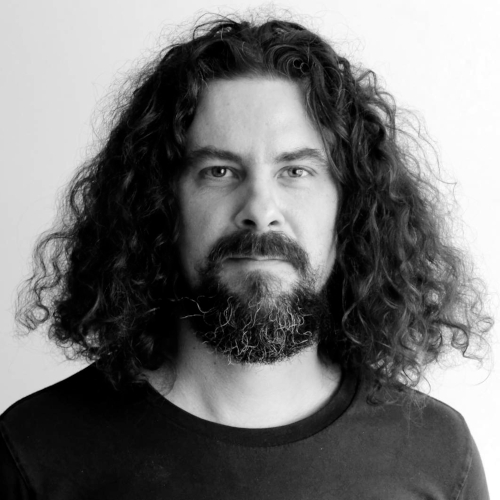

Minusta

Olen Xavier Barral, perinnerakentaja. Arkkitehtuuri on intohimoni. Minua kiinostaa piirtäminen, suunnittelu ja rakentaminen.
Olen opiskellut arkkitehtuuria ja työskennellyt suunnittelijana arkkitehtitoimistoissa ja oma firmassa. Olen oppiskellut rakennusrestauroijaksi ja olen restauroinnut monia vanhojen kirkkojen ja linnojen restaurointia Ranskassa. Myöhemmin minulla oli oma firma ja jatkoin remontteja sekä vanhojen kivitalojen ja maatilojen restaurointeja.
Osaaminen:
- perinteisen puurungon ja kattoristikoiden suunnittelu ja rakentaminen
- katon rakentaminen
- perinteisen parketin asennus
- perus puusepän osaaminen
- luonnonkivimuuraus
- perinteisen kalkki- ja savilaasti ja rappaus
- vanhan rakennuksen kunnon tarkitus
- perus maalaus